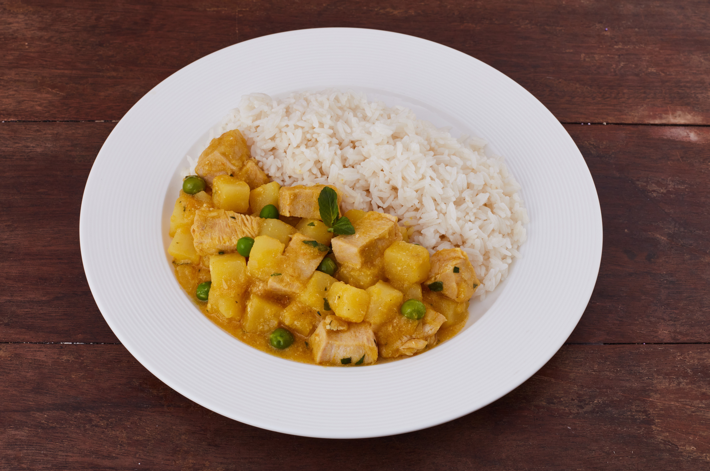

Cau Cau de pollo

Ingredientes
- 500 g de pechuga de pollo en cubos
- 1 cebolla roja picada en cubos pequeños
- 2 dientes de ajo picados
- 2 cucharadas de ají amarillo molido
- ½ taza de culantro picado
- 1 taza de caldo de pollo
- 4 papas blancas en cubos
- ½ taza de arvejas
- 1 hoja de laurel
- Sal, pimienta y comino al gusto
- Aceite vegetal
Preparación
- En una olla con aceite caliente, dora los cubos de pollo con sal y pimienta. Retira y reserva.
- En la misma olla, sofríe la cebolla y el ajo hasta que estén dorados.
Agrega el ají amarillo molido, el comino y el laurel, mezclando bien.
- Añade el pollo dorado y el caldo de pollo. Cocina por 5 minutos.
Incorpora las papas y arvejas. Cocina a fuego medio hasta que las papas estén tiernas (15 min aprox.).
- Retira la hoja de laurel y agrega el culantro picado. Mezcla y cocina 2 minutos más.
Sirve caliente, acompañado de arroz blanco.
¡Listo! Un delicioso cau cau de pollo fácil y lleno de sabor.
Home